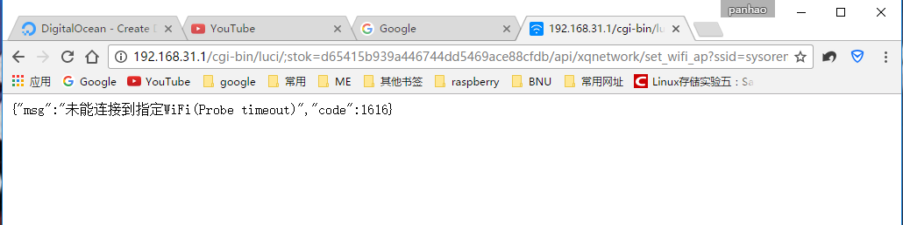
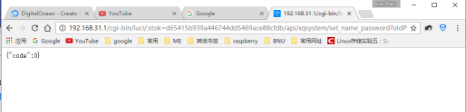

2.4 小米路由器mini / 青春版刷机指南
（配图为使用mini的情形，青春版有细微不同的地方会在后文指出）
路由器初始设置（已配置好可以跳过这一步）
通过wifi或网线连接路由器，浏览器打开192.168.31.1，设置一下名称与密码，一定要记住路由器管理密码，后面会用到
设置好之后等待路由器重启，重新输密码连接路由器wifi（网线直连可以不管）
开启ssh，获取root权限
如果这一步失败多半是路由器用了较新的固件所致，去网上找旧版本的固件手动降级即可
浏览器打开192.168.31.1,输入管理密码登陆路由器管理界面
登陆之后你会获取到一个stok,这就是我们后面执行指令的一个凭据
注意此时网页的地址大概为这个样子
http://192.168.31.1/cgi-bin/luci/;stok=554daed22ef11299955fde6fc2d5a664/web/home#router
然后我们把stok后的/web/home#router
改为/api/xqnetwork/set_wifi_ap?ssid=sysoremiscool&encryption=NONE&enctype=NONE&channel=1%3B%2Fusr%2Fsbin%2Ftelnetd
回车之后稍等一会儿，浏览器返回
{"msg":"未能连接到指定WiFi(Probe timeout)","code":1616}

现在路由器已经开启了telnet服务，可以通过telnet登录上去了，但是密码还没设置好，所以下一步设置root密码
接着把刚才替换的部分
改为/api/xqsystem/set_name_password?oldPwd=原管理密码&newPwd=新root密码，这里的两个密码根据自己的情况填写正确，建议都设置成一样的，不容易忘
回车以后网页返回 {"code":0}，就证明修改成功

然后就可以通过putty、Xshell等工具登录路由器进行刷机了，执行命令telnet 192.168.31.1
用户名为root，密码为刚才通过http请求设置的，正常情况下就能登陆上去了，小米路由器青春版的欢迎界面是经典的“Are you OK”，而mini则略简洁
刷机
对于mini可以直接用fat或fat32格式的U盘通过usb接口把第三方固件如潘多拉盒子拷贝到路由器上去，复制第三方固件到U盘根目录下（其他目录也可，根目录最方便），U盘插到路由器上去之后通过df -h 命令我们可以看到我们的U盘（即/dev/sda1）被自动挂载到了/extdisks/sda1下，我们可以通过 cd /extdisks/sda1进入该目录选择刷机固件
对于青春版，由于没有usb接口，因此我们只能通过winscp等软件将固件通过网络传输过去 以winscp为例，确保电脑与路由器处在同一局域网下，打开winscp程序，协议选择scp，填上路由器ip地址，用户名，密码就可以登录然后传输文件了，把固件传到 /tmp 目录下
之后就可以通过命令来进行刷机 青春版和mini在这里有细微的差别
对于mini用命令mtd -r write 你的第三方固件名称如PandoraBox-ralink-xxxx.bin OS1
刷机
对于青春版 用命令mtd -r write 你的第三方固件名称如PandoraBox-ralink-xxxx.bin firmware
注意这里的固件一定是和路由器版本一一对应的，不能有误，不然一般都会失败
之后就等待路由器刷入固件重启即可

然后你就可以看到一个以Pandora开头的wifi了，大功告成
连接后可以就打开192.168.1.1进入潘多拉盒子的管理界面进行配置
默认用户root，密码为admin